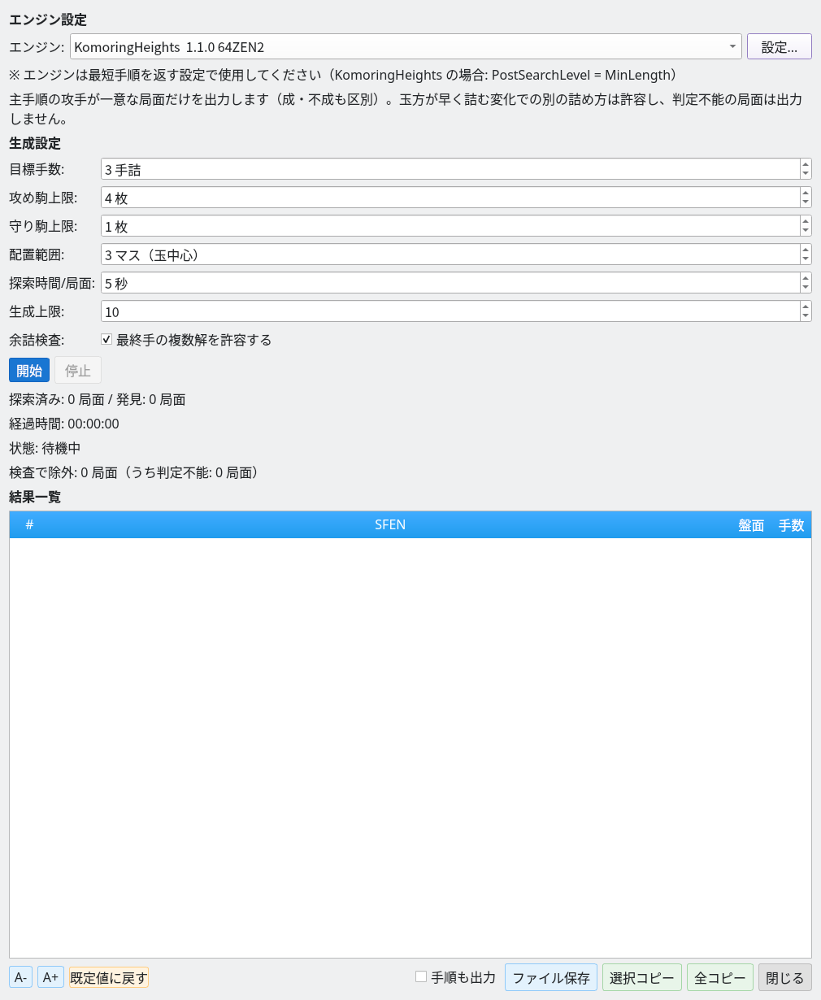
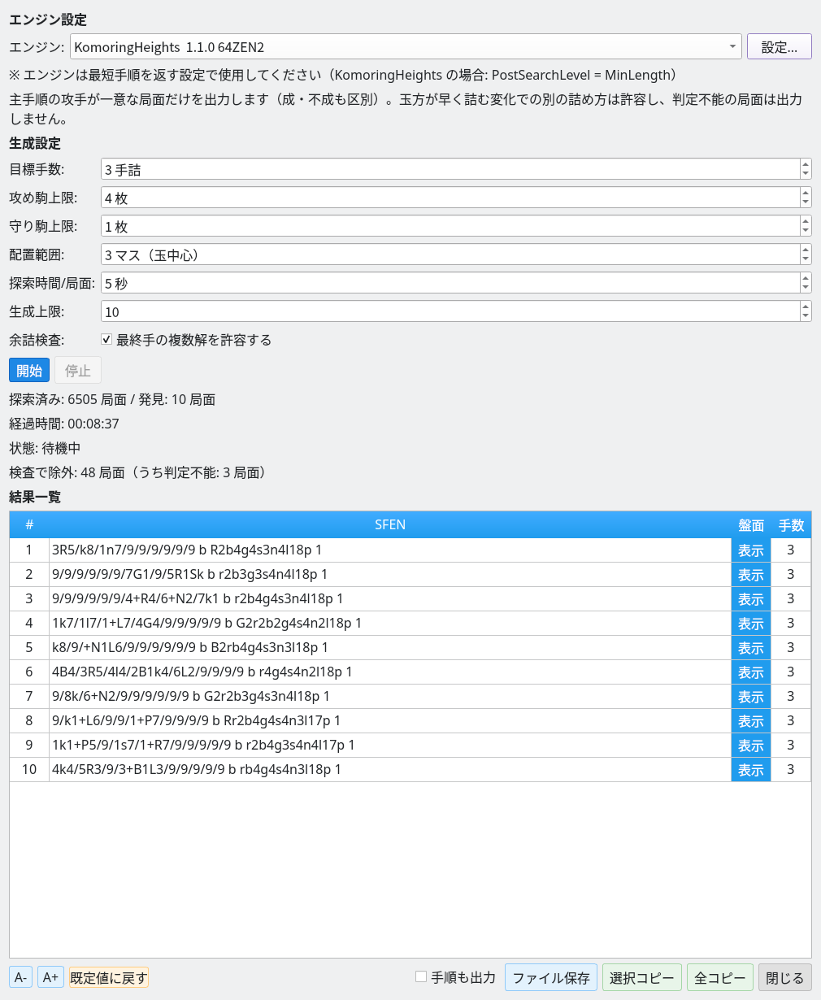
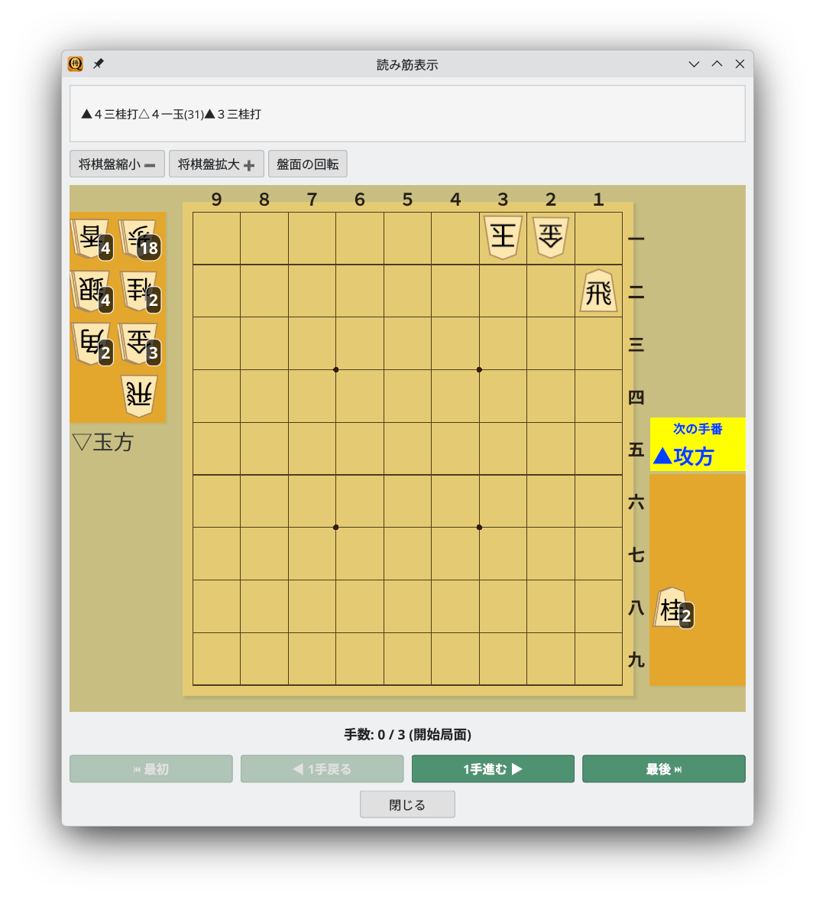

Generate tsume shogi puzzles from random positions verified by a USI engine
Screenshots show the Japanese interface unless otherwise noted.
Generate random tsume shogi candidates and verify mates with a USI engine
The tsume shogi generator automatically performs the following steps.
Set the parameters in the generator dialog, then start generation
Choose Tools → Tsume Position Generator to open the dialog. You can configure the following settings.

Generator dialog: set the engine and generation parameters, then click Start
Positions are generated automatically as follows.
Candidate positions are sent to the USI engine. Only positions with mate in exactly the requested number of plies are accepted.
Discovered tsume shogi positions appear in the results list
When a mate of the requested length is found, unnecessary pieces are trimmed before the position is added to the results. Pieces that can be removed without changing the mating length are automatically eliminated to simplify the puzzle.
The results list offers these actions.

Generation results: ten 3-ply mates found after searching 1,400 positions in 00:01:32
Trimming automatically removes decorative pieces from randomly generated positions: pieces that do not affect the mating solution.
Review generated solutions in the principal variation window
Click Board in the results list to open the principal variation window. Replay the mating line one move at a time with the Go Forward 1 Move and Go Back 1 Move buttons.

Principal variation display: a generated 3-ply mate at its starting position (0/3)